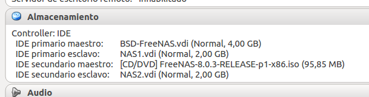
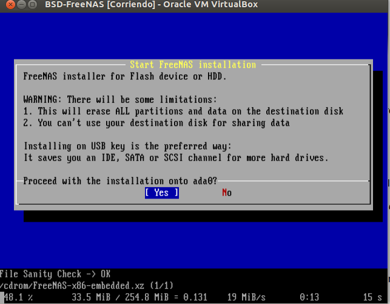
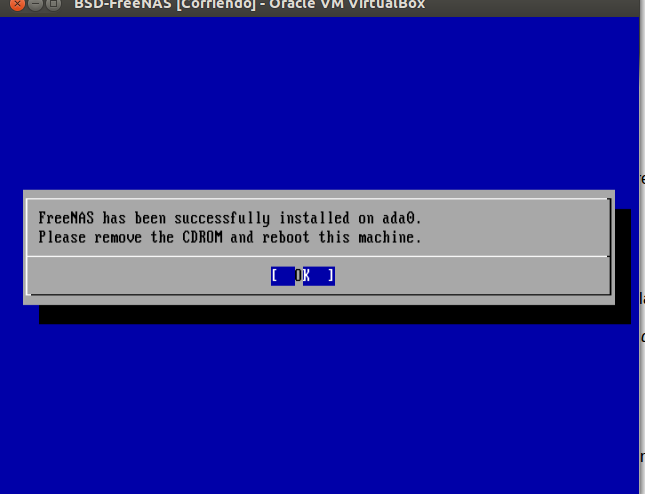
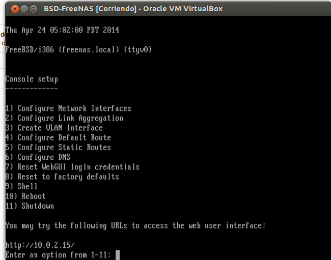
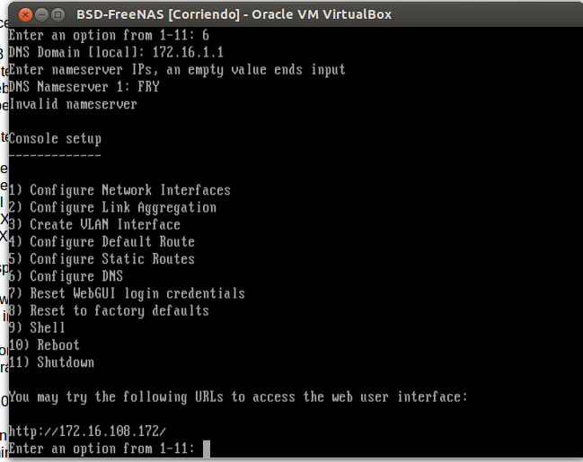
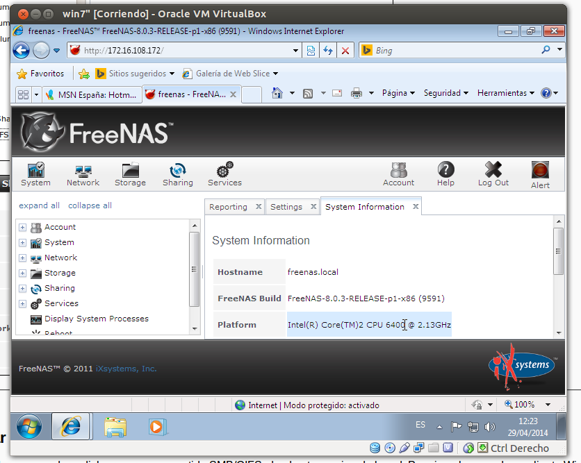

- Módulo: Fundamento de Hardware
- Título del trabajo Almacenamiento NAS
- Componentes del grupo: Gregorio Adrián Quintero Álvarez
- Curso Académico: 2013/2014
- Fecha de entrega: 29 de Abril de 2014
Para esta práctica necesitaremos una máquina virtual de tipo FreeBSD a la cual le instalaremos una ISO de 32 bits. Además del disco duro virtual, vamos a añadir dos discos virtuales más de 2GB cada uno para crear el volumen de almacenamiento del NAS. También deberemos de establecer el adaptador de red en modo puente para que podamos acceder desde cualquier equipo a nuetra red.
Comenzaremos la instalación de la ISO de FreeBSD y usaremos el disco que se llama asa0 y según se termine la instalación apagaremos el sistema y quitaremos la ISO. Ahora reiniciaremos la máquina virtual y realizaremos una configuración inicial. Estableceremos el interfaz de red de forma manual y configuraremos la IP y la máscara de red. También configuraremos la puerta de enlace y el servidor DNS.
 Para acceder al panel de configuración de FreeNAS iniciaremos un navegador en nuestro PC estableciento la IP del servidor en la barra de busqueda. Ahora vamos a crear un volumen a partir de los dos discos creados de 2GB. - Ir a "Storage -> Volumes -> UFS Volume Manager". - Elegir mirror (RAID1) con los dos discos y el montaje en /mnt/volumen1. - Si lo necesitamos, crear directorio /mnt/volumen1, para montar el volumen. - Activar el servicio de carpetas compartidas, ir a "Servicios" -> "Control de Servicios - > CIFS -> ON". - Ir al servidor FreeNAS. Entrar en la Shell (Opción 9). Ejecutar los comandos siguientes:
Ahora probaremos que podemos acceder a dicho recurso compartido SMB/CIFS, desde otro equipo de la red usando un cliente Windows7.
